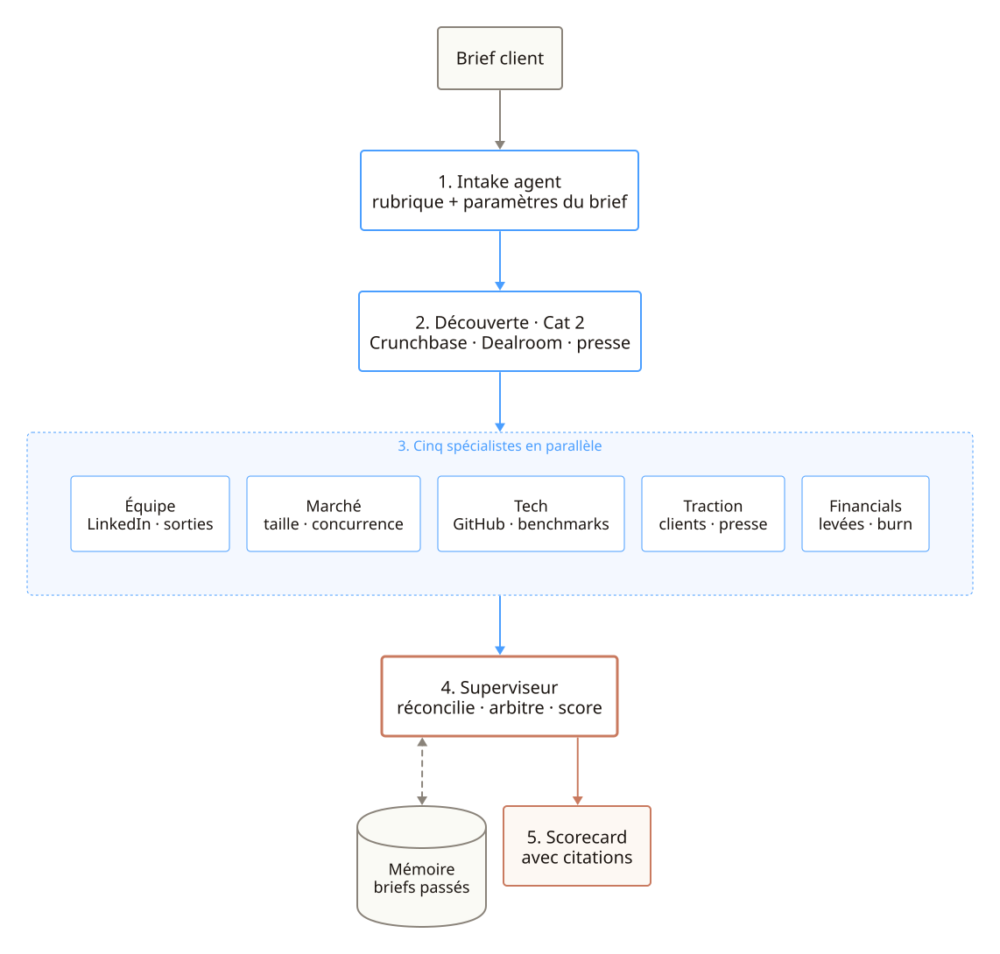
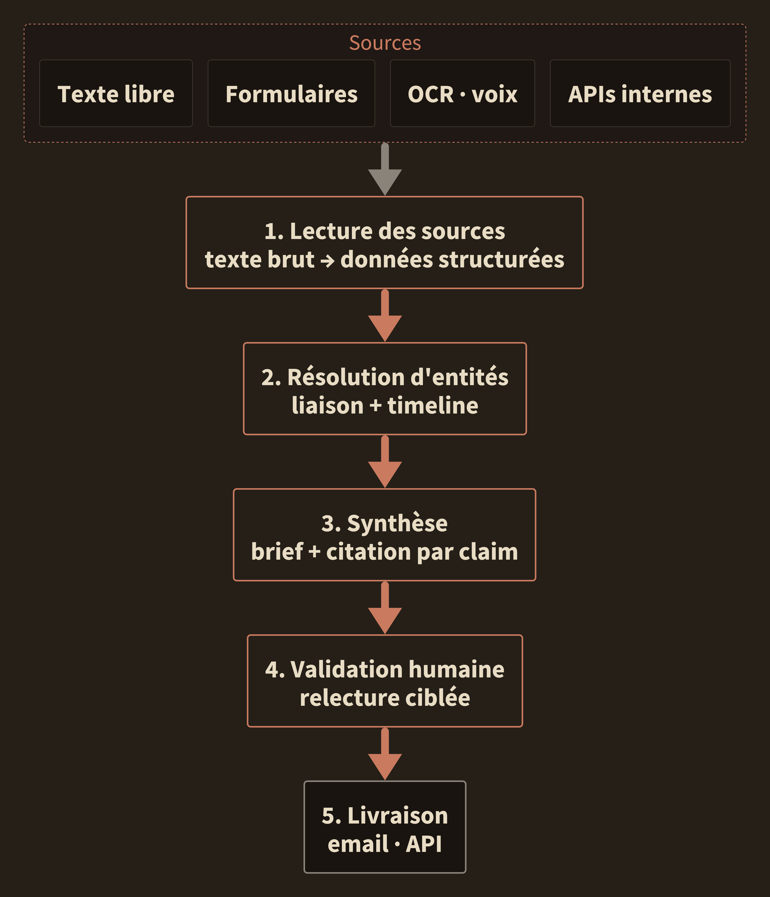
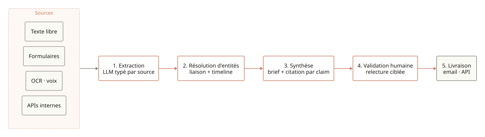
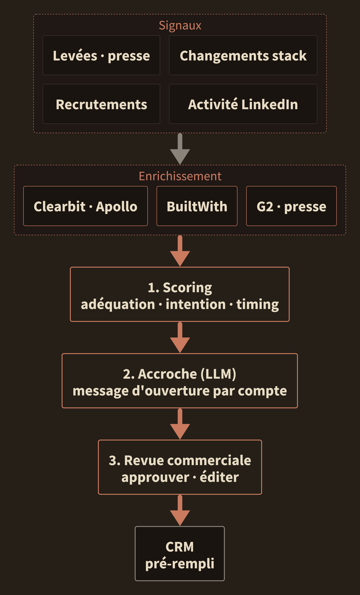
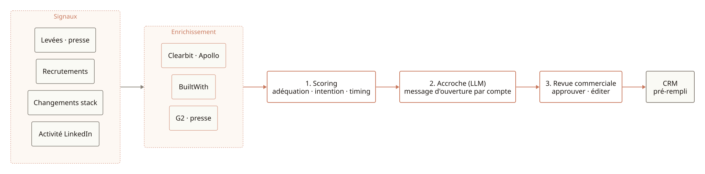

Architecture


Brief · Capgemini Open Innovation
Vos trois sujets du call, reformulés en systèmes agentiques. Pour chacun : ma lecture, l'architecture, un exemple concret livré sur ce pattern, et ce qui change pour votre équipe.
Suite à notre échange
Grille de lecture · trois catégories d'agent
Cat 1 · Déterministe
Étapes posées à l'avance. LLM uniquement sur les nœuds créatifs (extraction, rédaction). Le reste : code classique.
Quand : volume, livrable récurrent, fiabilité > créativité.
Cat 2 · Raisonné
Un LLM décide de l'ordre des étapes à partir d'outils disponibles. Une seule boucle, un seul agent.
Quand : parcours variable selon l'entrée, périmètre d'outils stable.
Cat 3 · Multi-agents
Plusieurs spécialistes en parallèle, un superviseur qui réconcilie. On reproduit une équipe humaine.
Quand : plusieurs domaines distincts, livrable structuré à citer.
Vos trois sujets retombent sur Cat 1 (rapports et prospection) et Cat 3 (scouting). Pas le même pattern, pas les mêmes arbitrages. La suite détaille pour chacun.
Cas d'usage
Vous m'avez dit
Vos briefs internes (pré-meeting client, briefs comptes, veille secteur) sont produits en masse mais leur pertinence pour le lecteur final reste un vrai sujet : signal noyé, format générique, peu d'angle adapté à qui lit.
Type de problèmes
Type de solutions · briques que j'assemble
Architecture


Référence marché · Abridge
Abridge applique ce pattern Cat 1 au compte-rendu médecin-patient : signal vocal hétérogène en entrée, brief structuré en sortie, chaque claim traçable. Déployé à l'échelle dans les plus grands health systems US, c'est la preuve qu'un Cat 1 déterministe tient en production sur du contenu sensible.
Pattern de référence · brief consolidé multi-sources
Pour ce type de problème, voilà les arbitrages d'archi que je prends. Mêmes briques pour le brief pré-meeting client, le brief compte hebdo ou la veille secteur. On adapte juste les sources et la rubrique au profil du lecteur.
Ce qui change pour vous
Vos consultants reçoivent un brief calibré à leur compte et à leur rôle, pas un brief générique. Les claims sont cités, le format est stable, et la production passe de l'agrégation manuelle à la validation ciblée.
Cas d'usage
Vous m'avez dit
Prospecter en dehors de Salesforce : tout le travail amont (signaux, recherche, enrichissement, qualification) avant qu'un lead n'atterrisse dans le CRM.
Type de problèmes
Type de solutions · briques que j'assemble
Architecture


Référence marché · Clay
Clay orchestre tout le travail de prospection amont — signaux, enrichissement multi-API, qualification, accroche — selon le pattern Cat 1 + tool-calling présenté ici. Le CRM reçoit des comptes pré-qualifiés, pas des leads à retraiter. Catégorie "GTM engineering" qu'ils ont structurée et qui s'est imposée chez les équipes commerciales modernes.
Cas livré · système de lead gen B2B SaaS
Pipeline end-to-end livré pour une équipe commerciale B2B SaaS : sourcing → enrichissement → scoring → outreach → CRM. Temps de qualification manuelle réduit d'un ordre de grandeur.
Ce qui change pour vous
Vos commerciaux arrivent le matin avec des comptes pré-qualifiés et des accroches prêtes à valider. La journée passe en conversation client, pas en recherche. Une rubrique de scoring commune, comparable entre équipes, remplace l'intuition.
Cas d'usage
Vous m'avez dit
Scouter et analyser des startups pour vos clients. Beaucoup de data à traiter, éléments de due diligence, livrables que vos clients doivent pouvoir exploiter directement.
Type de problèmes
Type de solutions · briques que j'assemble
Architecture

Référence marché · Harvey
Harvey fait de la due diligence légale et de l'analyse contractuelle en production chez les plus grands cabinets mondiaux. Même architecture Cat 3 : plusieurs spécialistes en parallèle, supervision, sources citées par affirmation. C'est la preuve la plus aboutie que ce pattern tient en entreprise sur du livrable client à enjeu.
Ce qui change pour vous
Votre analyste passe d'un dossier à la fois à une cohorte entière comparée sur la même grille, en parallèle. Les due diligences passées nourrissent les suivantes au lieu de disparaître. Chaque affirmation livrée à votre client est citée, rien n'est opinion.
Démonstrateur · due diligence sur dossier fictif
Dossier fictif à titre d'illustration. Le brief, la rubrique et le format de scorecard sont ceux que j'applique ; les noms et scores sont inventés.
Brief reçu
Exemple
"Client CAC40, secteur assurance. Propose-nous 5 startups agentiques prêtes à industrialiser l'automatisation des déclarations de sinistres. Horizon 12 mois, Europe et US, Series A minimum, focus équipe technique et traction sur le segment."
Déroulé du pipeline
01
Intake
Rubrique de due diligence dérivée du brief : 5 critères, poids, seuils go/no-go.
02
Découverte
Shortlist élargie depuis Crunchbase, Dealroom, presse spé. Dédup, filtre stade.
03
5 spécialistes
Équipe · marché · tech · traction · financials. Appels parallélisés, chacun dans son domaine.
04
Superviseur
Réconcilie, arbitre les contradictions, produit un score global et une recommandation.
05
Scorecard
Top 5 livré avec score par dimension, forces, risques, sources citées par affirmation.
Démonstrateur · extrait de scorecard livrable
Extrait de scorecard · format livrable
| Startup | Équipe | Marché | Tech | Traction | Financials | Score global | Note du superviseur |
|---|---|---|---|---|---|---|---|
| Startup A | 8,5 | 7,0 | 9,0 | 6,5 | 7,5 | 7,7 | Profil équipe solide, tech différenciée, traction à confirmer hors DACH. |
| Startup B | 7,0 | 8,5 | 7,5 | 8,5 | 8,0 | 7,9 | Traction client assurance déjà établie, positionnement net. Dépendance OpenAI à challenger. |
| Startup C | 7,5 | 7,5 | 7,0 | 5,5 | 6,0 | 6,7 | Tech prometteuse mais trop tôt pour l'industrialisation demandée. |
Chaque cellule du tableau final est adossée à des sources citées (LinkedIn, Crunchbase, presse, site produit). Le superviseur rejette toute affirmation non sourcée.
Livrable
À la fin du build, votre équipe reprend la main. Pas de boîte noire, pas de SaaS facturé au mois. Voici ce qui est transféré dans tous les cas.
Code source complet
Python ou TypeScript selon la stack. Tests, typage strict, conventions documentées. Déposé dans votre dépôt Git, propriété pleine.
Jeu d'évaluation
Cas de référence avec vérité terrain, rejouable en une commande. Toute modif du prompt ou du modèle se mesure immédiatement, zéro régression silencieuse.
Observabilité en production
Traces, coûts, latence, taux d'acceptation par nœud. Dashboard prêt. Vous voyez où l'agent passe son temps et combien ça vous coûte à l'appel.
Documentation & runbook
Architecture, schémas de données, prompts commentés, runbook d'exploitation (déploiement, rollback, incidents fréquents). Votre équipe opère sans moi.
Transfert de compétence
Deux sessions de handoff avec l'équipe qui reprend : revue ensemble du code et des choix d'architecture, questions à chaud, points de vigilance documentés. Aucune zone d'ombre à reconstituer après mon départ.
Garantie post-livraison
2 semaines de support inclus après le handoff. Tout bug ou régression est corrigé sans re-facturation. Au-delà, forfait mensuel optionnel.
Pour creuser
Pour aller plus loin sur l'un des trois cas, le plus simple est un deuxième échange pour cadrer ensemble le sujet qu'on priorise. Cadence, périmètre et livrables s'ajustent au cas précis. Le domaine évolue rapidement, je préfère proposer un plan qui colle à votre contexte plutôt qu'un template.
Préparé pour Capgemini Open Innovation · Confidentiel